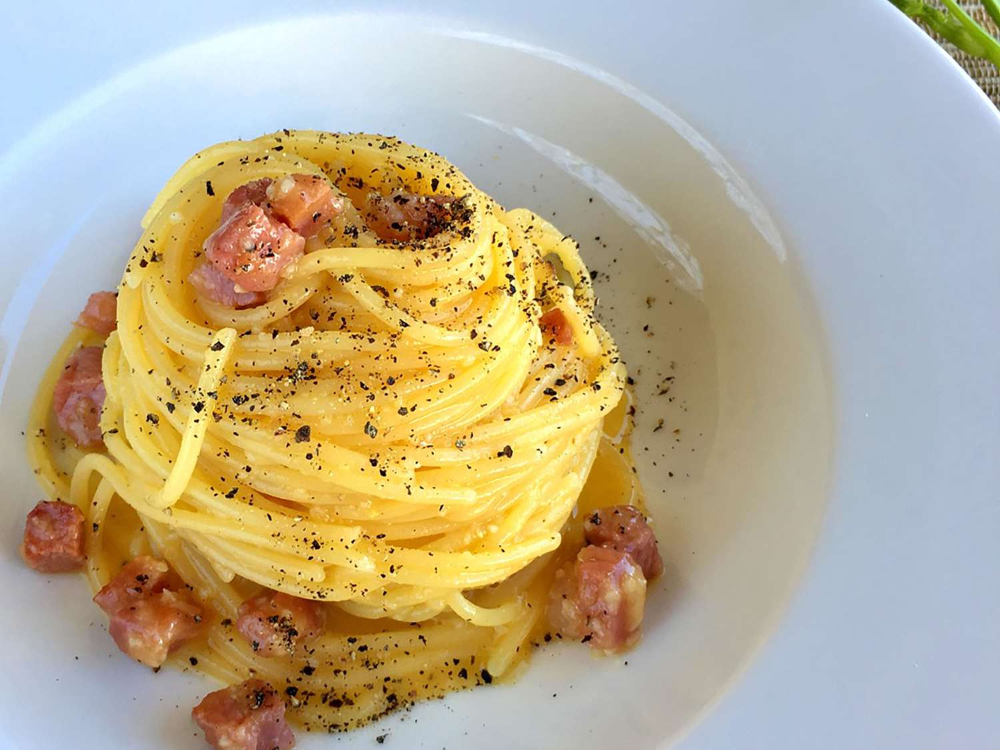

Description
This is an authentic carbonara recipe that uses local ingredients from Italy. Alternative ingredients are provided
for those with no access to them. This recipe can serve up to four people. Enjoy!
Ingredients
- One package of spaghetti (fourteen ounce)
- Five ounces of guanciale (cured pork cheek) cut into small cubes.
As an alternative, bacon may be used
- Three egg yolks
- One large egg
- Three quarters of a cup of grated Pecorino Romano cheese, plus whatever you may want to add
to your plate once served. As an alternative, Parmesan can be used
- Salt and freshly ground pepper to taste
Steps
- Fill a large pot with lightly salted water and bring to a rolling boil.
Stir in the spaghetti and lower the heat slightly. Cook the pasta uncovered, stirring occasionally, until
tender yet firm to the bite (time will vary based on brand of pasta). Set aside about a cup of pasta water
and then drain.
- In the meantime, place a skillet over a hob at medium heat; add guanciale (or bacon), cook and stir until
crisp, for five to ten minutes.
- Whisk the three egg yolks and whole egg together in a bowl; add in the grated Pecorino Romano (or Parmesan)
cheese, salt, and black pepper until it becomes a uniform mixture.
- Once the spaghetti are done, add them to the skillet, together with a gentle amount of pasta water, and
stir for a few seconds. Add in the contents of the bowl and continue to stir until a yellow cream coats
all of the spaghetti.
- Serve, and then season to taste with extra cheese and pepper.
Adapted from Allrecipes